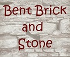

Bent Brick has been the leader in selling brick, stone, and other masonry in the Atlanta area for more than 50 years. Of course, we are known throughout this area as being the primary seller of our special preformed curved brick. Our products are noted not only for their beauty, but also for their durability. We offer a 20-year guarantee on every product we sell. We don't just sell the finest brick and stone, we also install it. We will come to your site and plan your project from start to finish. Let our expert designers and masons take care of every detail of your project. We know that these days both residential and commercial properties have both eyes on the budget, so we will work with you to create a package that meets not only your structural needs, but also your financial needs as well.
We are proud to begin selling our QwikStone™ slab stone product. QwikStone only has to be mixed with a little H20 in order to produce a pourable brick slurry that can be formed into any shape you want. QwikStone comes in a variety of colors that can suit your every design need. We are the only sellers of this product in this region. QwikStone can withstand very high psi levels, which means that this product will not crack or crumble even when placed in very high-traffic areas. Best of all, QwikStone sells for less than half the price of comparable brick and stone products. Drop by and see it for yourself. It will make a lasting impression on you!
Subject to availability.